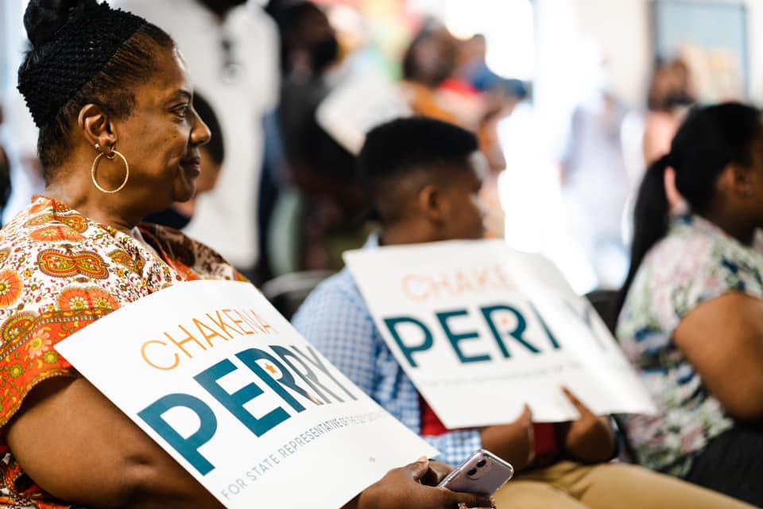
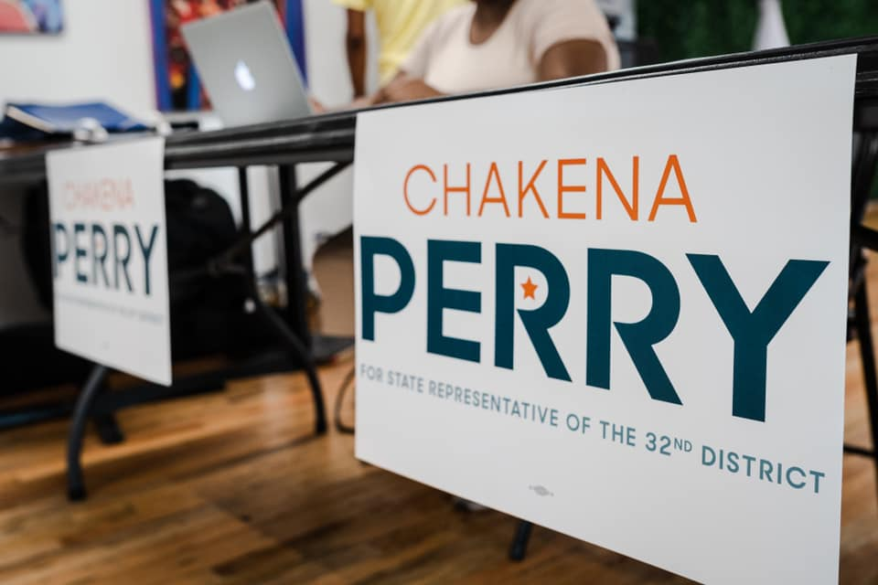
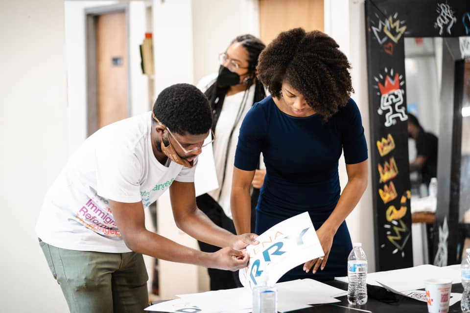
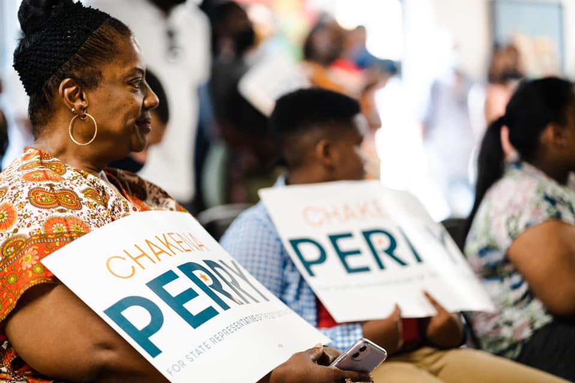
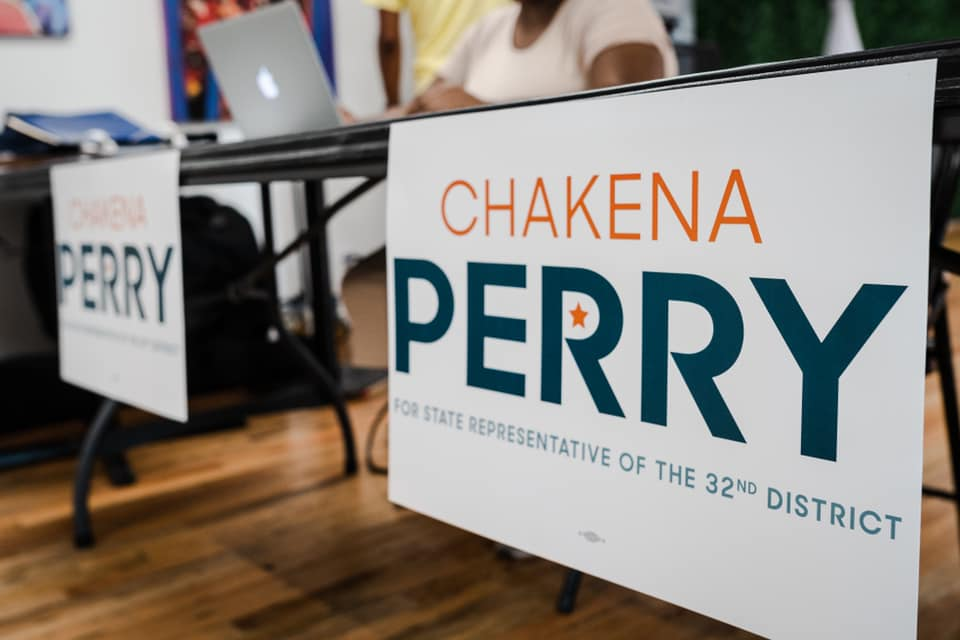
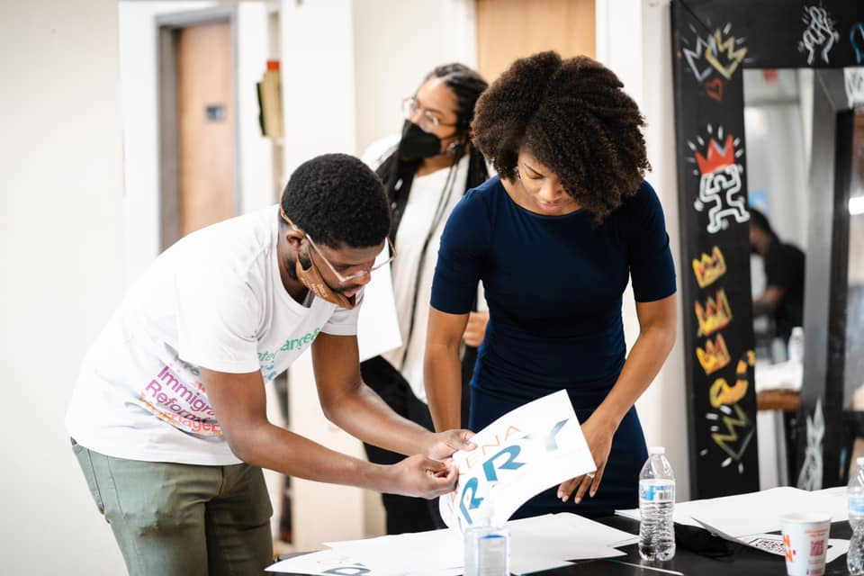

Elisa Slaton is a multidisciplinary graphic designer based in Virginia focused on visual identity, web design, art direction, brand development, and consulting. She prides herself on having no distinct style or method in her practice, leaving space to evolve across digital and physical mediums.
Feel free to contact for project inquiries.
Selected Clients
Kareracter
Black Chalk & Co.
Therapy for Black Girls
Dr. Joy Harden Bradford
The Poetry Foundation
American Life in Poetry
The Dovetail Project
Capabilities
Web Design
Identity Design
Digital Marketing
Printed Matter
Commissions/inquiries
All rights reserved. © 2021 Elisa Slaton
SELECTED PROJECTS
Upstream: A Short Film, 2021
Creative, Film Poster DesignUpstream follows two young women, Clara and Erica. Clara, a chaotic, mismanaged, ill-equipped and pregnant mother to be, in the crux of a quarter-life crisis, desperately searches for her birth mother to ask what it was like to give her up for adoption. She stands beside her best friend Erica, a graceful, structured, and nurturing young woman who quickly and unexpectedly takes on the role of Caretaker for her seven-year-old cousin, whose parents have just passed away.
The film unapologetically explores themes of adoption, motherhood, and the expectations of young womanhood through a delicate balance of poetry and fiction narrative. We are making this film for any and all of us who are questioning the functioning role of the “mother” in society. Who are we and where do we fit in?

The Sojourner Project, 2020, 2021
The Sojourner Project is a mobile Black Studies academy initiated by the Practicing Refusal Collective, an international Black feminist forum of artists and scholars dedicated to initiating dialogues on blackness, anti-black violence and black futurity in the twenty-first century.
The Sojourner Project - South Africa is presented by the Practicing Refusal Collective in partnership with Art for Humanity (AFH), Durban University of Technology, Visual Identities in Art and Design (VIAD), University of Johannesburg, The Black Visualities Initiative at the Cogut Humanities Institute at Brown University, and the Center for the Study of Race, Indigeneity, and Transnational Migration at Yale University.
This website was made in collaboration between Nontsikelelo Mutiti, Quynh Nguyen, Bryant Wells, and Alvin Ashiatey.
View project here


Friends of Kena', 2021
Logo & Branding, Social Media Templates
Kena has entered the building and she’s ready to shake things up. Keena is the mouthpiece for a generation who’s tired of the status quo.She’s mobilizing millennials and activating the next generation of civic leaders. With this bold, yet approachable campaign concept, the city will have no choice but to pay attention to the newest voice of the people, Chakena ‘Keen Eye’ Perry.
Chakena is running for State Representative of the 32nd District, in Chicago, IL. for 2021.

 






Kareracter Academy, 2020, 2021
Sticker Design, Social Media Templates
Kareracter Academy is a virtual program designed to offer accessible branding education through mind-mapping to empower you to visualize your dreams, organize your ideas, and, ultimately, build a signature brand. We’re combining our branding expertise with the ideation process we’ve refined over the years to create mind-mapping solutions that help discover your brand’s personality.


SkinCircle, UI/UX Design, 2018
SkinCircle is a social media app for skincare enthusiasts and acne sufferers who seek alternative methods to treat skin concerns.
The app offers accessible, streamlined, crowdsourced advice and recommendations ranging from products, diet, skincare routines, and ethical substitutes from the Circle community.
Tools: Illustrator, Sketch, Proto.io
View full UI/UX process
here
"When the Whirlwind Begins", Exhibition designer, 2019
This group exhibition of Philadelphia artists is the culminating gesture of the Applied Curatorial Practices class taught by The Anderson Curator/Director Chase Westfall. The class is made up of six undergraduate VCUarts students who were nominated to participate by their respective departments. "When the Whirlwind Begins" offers a thematic survey of some of the most relevant, challenging, and exciting work being made in Philadelphia today. The exhibition explores the energy of transformation that emerges in times of chaos and change. Artists were selected through student research and a series of site and studio visits made in Philadelphia during the Fall semester.
"Sight, Site, Cite", Tabled, 2019
As designers, we often deal with what is visible. How can we exploit this tool of visibility? How can we use the action of publishing to bring content, community, concerns into view? Sight, Site Cite, is a publishing fair that addresses these concerns of visibility, of accessibility through publishing. Designers created individual an imprints, mission statements, and markers to produce and distribute three editions under.
"Garo Manga 1966-1971", Research Project & Publication, 2019
Compiled in this publication is Garo covers, and stories from 1966 to 1971 (Edition 23 to 90). Through my research, much information about Garo is inaccessible due to language barriers, the rarity of the publication, and assuming some copyright obstacles. However, amateur translators who have procured some copies have been able to upload dates and contributors for several of the editions. Also incorporated in the publication are scans from “scanlation” translators specified beforehand. This particular translator produced an archive of scanned covers and stories. Thus, I was able to pair the covers, the contributors, the dates, and the stories to the correct publication. This publication additionally, stands as a publication that would be ever-changing as more information becomes accessible to the general public.


Last update: 11/4/2021, 09:26:35 AM
This website is built by hand, and always a work in progress.